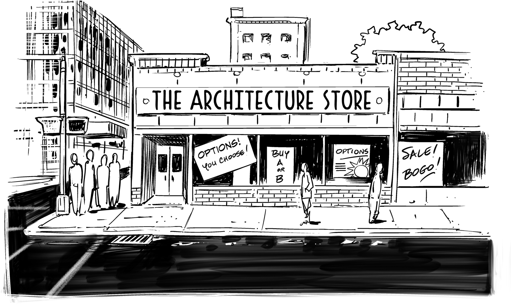

In Uncertain Times It’s Good to Have a Few Options

Quite frequently I am being asked about the value of architecture, sometimes out of actual curiosity, and at other times as a (welcome) challenge. Sadly, I also consistently find out just how difficult it can be to answer this seemingly harmless question in a succinct and convincing manner for a nontechnical audience. I thus consider having a good answer to this question a valuable skill for any senior architect.
A colleague once suggested that an architect’s key performance indicator (KPI) should be the number of decisions made. While decision making is a defining element of doing architecture, I had a feeling that making as many decisions as possible isn’t what drives my profession.
Measuring an architect’s contribution by the number of decisions they’re making reminded me of trying to measure developers’ productivity in lines of code written. That metric is widely known as a bad idea because poor developers tend to write verbose code with lots of duplication, whereas good developers find short and elegant solutions to complex problems. After a little bit of pondering, I remembered one of Martin Fowler’s most popular articles that also involves decision making, but from a very different point of view.
Many conventional definitions of software architecture include the notion of making difficult- (or expensive-) to-reverse decisions. Ideally, these decisions would be made early in the project to give the project a direction and avoid “analysis paralysis,” the dangerous state in a project when requirements gathering drags on without any code being written. Making critical decisions early comes with a major challenge, though: the beginning of the project is also the time of highest ignorance because little is known about the project as well as the technologies to be used. Therefore, architects are generally expected to draw on their ability to abstract from their past experience to get those decisions “right.” Consistent project cost and timeline overruns have hinted, though, that deciding the system structure early in a project is difficult at best, even for an all-knowing architect (Chapter 2).
Martin Fowler concluded some time ago that the opposite is actually true: “one of an architect’s most important tasks is to eliminate irreversibility in software designs.”1 So, instead of entrusting all crucial decisions to one person, a project can be better off by minimizing the number of early and irreversible decisions. For example, choosing a flexible or modular design can localize the scope of a later change and thus minimize the extent of up-front decision making. Now one could posit that deciding on a modular design is a second-degree up-front decision—we’ll come back to that point later.
The desire to make decisions up front is frequently driven by the project’s surrounding structures and processes as opposed to technical needs. For example, time-consuming budget approval and procurement processes may require teams to make product selections well before development can start. Likewise, enterprise software and hardware vendors have a tendency to push for early tooling decisions in order to secure a deal. They might promise unsuspecting IT management spectacular results, including reducing or removing the need for expensive programmers, if only their tool is chosen right from the start.
So if the organization is better off with an architect not making decisions, how do we eloquently articulate this to upper management?
Communicating to upper management becomes easier if you avail yourself of the business’s concepts and vocabulary. Along the way you may even discover business concepts that lend themselves to a new way of looking at IT. Financial services present us with just that: options.
Decision making is a common activity in financial services, especially in stock trading. Buying shares in a company requires you to put up cash now in hopes of a future return—somewhat similar to buying a new car (Chapter 6), though the future price is unknown. Now, if you could travel into the future and see the stock price one year from now, making a decision would be very easy as long as you can still buy the stock at today’s price. Time travel isn’t available quite yet, but the example makes clear that being able to defer a decision while fixing the parameters has value. That’s intuitive because you’ll know more by the time the decision has to be made, allowing you to make a better decision.
I tend to buy my ski passes on the day as I’ll have checked for good weather and snow conditions the night before. I choose to forgo a prepurchase discount for the value of being able to defer my decision.
The closest approximation to time travel in financial services is the concept of a financial option. An option is defined as “the right, but not the obligation, to execute a financial transaction at fixed parameters in the future.” It’s a lot simpler to understand with an example:
You may acquire the option to buy a stock for $100 (the “strike price”) in a year’s time (assuming a European option). After a year passes, it’s trivial to decide whether to exercise this option: if the stock price trades higher than $100, you can instantly make money by exercising your option to buy the stock for $100 and selling it at a profit. If the actual stock price is less than $100, you let the option expire, meaning you don’t use your right to buy at $100. Coincidentally, this doesn’t mean buying the option was a bad decision (see Chapter 6).
An option allows you to defer a decision: instead of deciding to buy or sell a stock today, you can buy the option today and thus acquire the right to make that decision in the future.2
Good IT architecture can also offer options. For example, by coding in Java or another language that’s widely supported you are offering an option to run that software on different operating systems, deferring that decision until a later date. Luckily, your option won’t expire as long as Java keeps being supported on many platforms.
The financial industry knows quite well that deferring decisions has value, and therefore an option has a price, C. There’s a whole market for buying and selling options and other derivatives. Two very smart gentlemen, Fischer Black and Myron Scholes, scored a Nobel prize for computing the value of an option, a formula known as the Black-Scholes formula:3
There’s a lot going on here, but we can see how a few key parameters influence the price. For example, a higher strike price (K) reduces the value of the option as we’d expect. We can also see that if the option is valid right now (T = t), the option price becomes the current price (S) minus the strike price (K).
So, it’s nice to have mathematical proof that options have value: if architects sell options, that means they bring value!
Luckily, IT architects need neither complex formulas nor a Nobel prize. All you need to do is design your system such that it defers decisions. You accomplish that by providing options that can be exercised in the future.
A classic example is server sizing: before deploying an application, traditional IT teams would conduct a lengthy sizing study to calculate the amount of hardware required to run the application. Sadly, infrastructure sizing leads only to one of two possible outcomes: either too large or too small, which either results in wasted money or a poorly performing application. What a great opportunity to defer some decisions!
For this example, the option the architect creates is horizontal scaling, allowing compute resources to be added or subtracted at a later time. Clearly, this option has a value: infrastructure can be sized according to the application’s actual needs and can grow (or shrink) as required. Also, this option isn’t free given that the system has to be designed to be able to scale out; for example, by making application components stateless or by using a distributed database.
Essentially, you’re paying for the option with increased complexity. Given that complexity is one of the primary factors slowing down system delivery, it’s no small price to pay. Also, to take advantage of the application’s scale-out capability, you likely need to deploy the application on an elastic cloud platform, which might lock you into a particular vendor. So, in effect you’re paying for one option by giving up another.
Architecture options are rarely free. For example, you may pay with increased complexity or loss of another option.
Just like financial options, architecture options also allow you to hedge your bets in case you want to limit your downside if a desired outcome doesn’t materialize. For example, providing an abstraction from a vendor-specific interface can hedge against the vendor increasing license fees or going out of business.
Now all the architect can do is offer the option for sale, describing the nature and price of the option. Someone has to decide whether to buy it. As mentioned a moment ago, making an application horizontally scalable or adding a layer of indirection isn’t free, so while it might be good architectural practice, decision discipline teaches us to examine whether this option is actually needed.
The financial world sells options with different strike prices, which is the price you pay per share when you exercise the option in the future. It’s easy to see (and reflected in the Black-Scholes formula) that options with a lower strike price command a higher up-front price: the lower the price to execute the option in the future, the higher your potential gain. It’s useful to note that the option still has value even if the strike price is higher than today’s price—after all, the price might increase in the future.
The effect translates easily into the earlier IT example: by migrating to a cloud provider we can lower the strike price for horizontal scaling to near zero, thanks to full automation. However, this reduction in strike price isn’t free: you’ll most likely pay with being locked into this specific provider’s APIs, access control, account setup, and machine types. So, the strike price for switching providers will be high.
To reduce the strike price for switching cloud providers, you can build an abstraction layer that allows you to move your applications to any cloud provider by clicking a button. Container platforms make this feasible, but you also need to abstract all your storage, billing, and access control needs. You may also be bound by commercial agreements. So, aiming for a near-zero-cost cloud migration carries a huge up-front development cost: this is an expensive option to buy. Considering the low chance of needing to switch providers, this option might not be worth buying.4
Minimizing the strike price—that is, switching cost from one vendor to another—is often seen as the architectural ideal, but it’s rarely the most economical choice.
Alternatively, consciously managing your application’s dependencies and deploying in containers might be a better balance. It carries a higher strike price—migrating will still incur some effort—but has a much lower up-front investment. Good architects offer a range of options at different strike prices and cost instead of aiming for a minimum strike price at all cost.
Consequently, just as with financial markets, pricing and buying architecture options takes some consideration. There’s a second factor, though, that has a major impact on the value of an option: uncertainty. The more uncertain about the future I am, the more value I derive from deferring a decision. For example, the option to scale horizontally isn’t that valuable if my application is built for a small and constant number of users. However, if I am building an internet-facing application that could have 100 or 100,000 users, the option becomes much more valuable.
The same is true in the financial world: the Black-Scholes formula contains a critical parameter, σ (“sigma”), which indicates the volatility. You’ll see this sigma squared in the numerator of the equation, indicating a strong correlation between volatility and option price.
The business not wanting to be involved in technical decisions leads to suboptimal decision making because IT alone can’t judge the value of an option. Instead, it’s the architect job to translate technical options into meaningful choices for the business.
Therefore, architects who put up options for sale need to understand the context and its volatility. Most likely, such input needs to come from the business side and can’t be made by IT alone. This implies that the business side stating that it doesn’t want to be involved in technical decisions is a bad idea because it will lead to suboptimal decision making.
Another parameter influences an option’s value: time. The time at which the option can be exercised—that is, the option’s maturity date—is represented by the parameter T in the Black-Scholes formula, whereas the current time is identified as t. The further out the maturity is in the future, the higher its value. This makes intuitive sense because your uncertainty increases the further you are looking into the future, making the option more valuable.
Architects and project managers typically work under different time horizons and thus value the same option differently.
This effect can help explain why architects and project managers often debate the merit of architecture options: project managers typically have a shorter time horizon than enterprise architects, who need to assure architectural integrity over many years and sometime decades. Due to the different time horizons, each of them has a different perceived (and, in fact, calculated) value of the same option. Interestingly, during such arguments, both parties are making rational but different decisions because their input parameters differ. A model, such as the options model, can help reduce such arguments to differences in input parameters and thus lead to better decision making.
The idea of applying options theory outside of financial instruments isn’t just limited to IT and is referred to as real options.5 Real options guide corporate investment decisions, such as acquisitions or buying real estate, and are commonly broken down into categories,6 which map very well to software architecture and projects:
The ability to make an investment, such as adding a feature, at a later time.
The ability to use or resell parts of a project in case the project as planned has to be abandoned. In IT architecture, this option can equate to building self-contained modules or services that can be salvaged for use in other projects.
The ability to increase capacity; for example, to scale out an application by adding hardware.
The ability to elegantly reduce capacity; for example, by using elastic infrastructure.
Just like with buying hot chocolate (Chapter 17), we can learn from looking at the real world outside IT.
In the financial world, markets are generally assumed to be efficient, meaning instruments are priced fairly according to their risk and expected return. Every once in a while, though, someone figures out a way to make immediate returns through arbitrage, an opportunity to profit at no risk. Architects should similarly look out for such opportunities where they can provide options at very low cost. For example, using an open source object-relational mapping (ORM) framework is both best practice and an inexpensive option to make switching database vendors easier.
Some Agile developers question architecture’s value because it was closely associated with a big, up-front-design approach that would look to make all decisions at the outset. Understanding architecture as providing options, you can easily see that the opposite is true. Both Agile methods and architecture are ways to deal with uncertainty, meaning that working in an Agile fashion allows you to benefit more from architecture.
The value of both Agile methods and architecture increases with uncertainty, so they are friend, not foe.
What should you do if meaningful options aren’t known, or at least not known far enough in advance? In that case, you need an architecture that can evolve along with your increased understanding of technology and customer needs—an approach that’s described as evolutionary architecture.7 Just like in natural history, what sets evolution apart from a series of changes is a fitness function that guides change by examining how well a solution serves an intended purpose. Choosing the right fitness function can now become the evolutionary architect’s contribution, rather than choosing a specific architecture up front. If you feel that’s an application of the well-known motto “all problems can be solved with one more level of indirection,” you might be onto something.
When I first shared the “selling options” metaphor with a senior financial services executive, the former head of asset management, he instantly embraced the metaphor and quickly concluded that higher volatility increases the value of an option. Translating this back into IT, he stated that in times of high uncertainty, as we are facing them today both in business and technology, the value of architecture options also increases. Businesses should therefore invest more into architecture.
Isn’t it fantastic when a person from a different field adopts a metaphor and takes it to the next level?
1 Fowler, “Who Needs an Architect?”
2 You can also use options for selling shares, the so-called put options. These are commonly used to hedge against major drops in a stock price, essentially acting like an insurance policy for your investment.
3 Wikipedia, “Black–Scholes Model,” https://oreil.ly/2ZcmI.
4 Gregor Hohpe, “Don’t Get Locked Up into Avoiding Lock-in,” MartinFowler.com (2019), https://oreil.ly/jWDAW.
5 Stewart C. Myers, Determinants of Corporate Borrowing (Cambridge, MA: MIT Sloan School of Management, 1976).
6 Lenos Trigeorgis, Real Options: Managerial Flexibility and Strategy in Resource Allocation (Cambridge, MA: MIT Press, 1996).
7 Neal Ford, Matthew McCullough, and Nathaniel Schutta, Presentation Patterns: Techniques for Crafting Better Presentations (Boston: Addison-Wesley Professional, 2012).